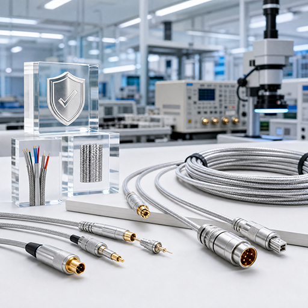
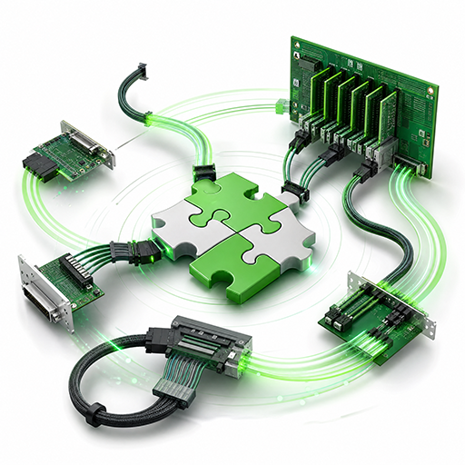
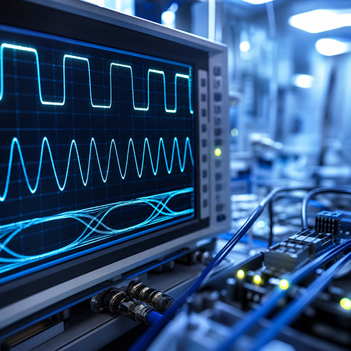
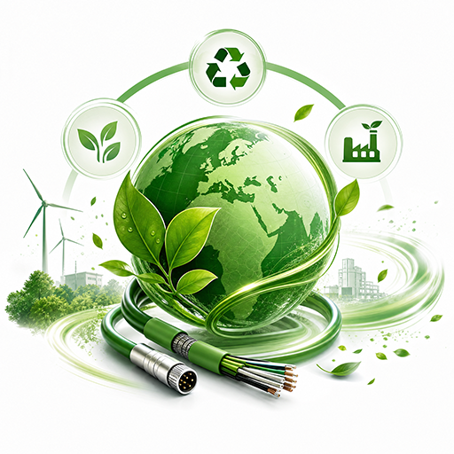
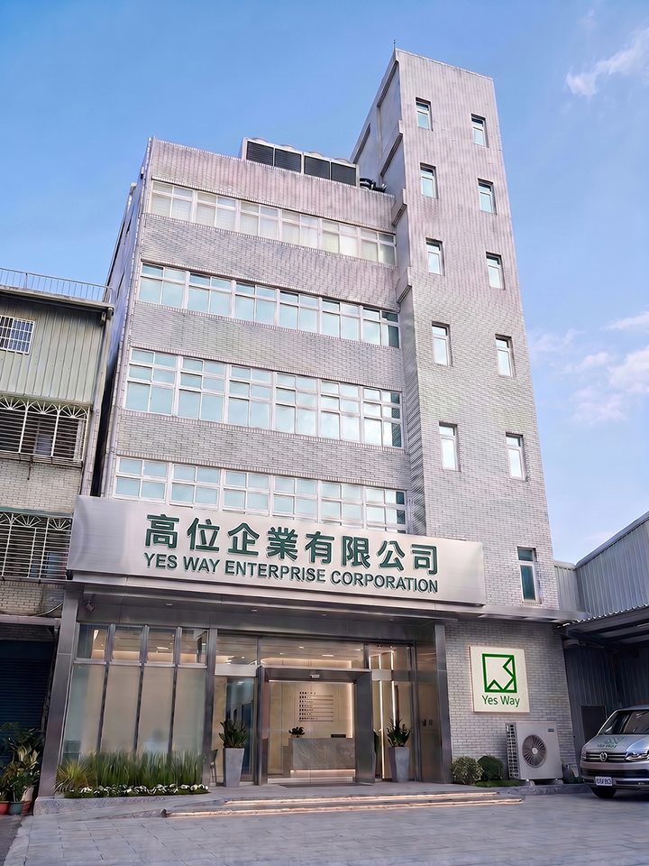
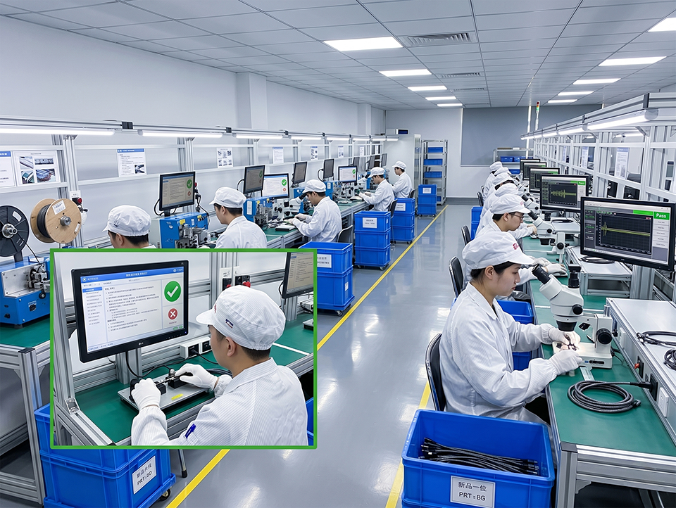

高位企業有限公司（Yesway Corporation）成立於 1992 年，總部位於台灣新北三峽區， 為領先的高速傳輸線材加工專家（Cable Assembly Manufacturer）。 自 SCSI、IEEE 1394 時代起步，高位憑藉逾三十年的精密加工與研發經驗， 成功轉型並深耕於 AI 伺服器、雲端資料中心及高效能運算（HPC）領域。
我們致力於提供穩定、可靠且具備極致性能的連接方案， 以「精密製造、技術領先、客戶導向」為核心價值， 成為全球科技品牌背後最堅實的技術夥伴。
高位企業將持續精進高頻模擬與自動化測試技術，深化 AI 伺服器供應鏈的技術合作， 致力於成為全球客戶在高速傳輸領域中最值得信賴的長期策略夥伴。
我們專注於極速傳輸領域，產品線全面覆蓋最新世代傳輸規格。 憑藉豐富的 PCB 設計與線材加工經驗，不僅提供標準化產品， 更具備背板（Backplane）與轉接板（Adapter Card）的高度客製化 ODM / OEM 研發實力。
MCIO（i4 / i8）、PCIe Gen5 / Gen6、SlimSAS（SFF-8654）、CXL 高速連接，針對次世代 AI 晶片的高頻需求，提供低損耗的訊號通道。
miniSAS HD、SATA、SFF-8611、USB 4.0 傳輸方案，確保大數據讀取與寫入的高效能表現。
專業 PCB 電路設計與機構件開發，靈活對應各類複雜線束加工（Cable Harness）需求。
在高頻傳輸環境中，加工精度直接決定訊號品質。 高位企業堅持台灣製造（MIT），建立具備國際標準的檢測實驗室， 運用三大關鍵技術確保每條線材符合最高規格要求。
Time Domain Reflectometry 阻抗測試：精確量測特性阻抗，確保阻抗連續性，將訊號反射降至最低，達成阻抗匹配最佳化。
Vector Network Analyzer：針對插入損耗（IL）、回波損耗（RL）與近端串音（NEXT）進行深度測試，確保在 PCIe Gen5 超高頻環境下的表現穩定。
Batch Intelligent Reliable Test：每批出貨均經過自動化資料驗證，建立完整品質履歷，提供客戶具備數據支撐的品質信任。
為實現極致工藝，高位企業持續投入資源於設備升級與製程管理， 確保每一項產品都具備極高的穩定性。
採用雷射剝皮機、自動熱錫機，針對極細同軸線（Fine Coaxial Cable）與高速排線進行高精度加工，避免人工操作導致的訊號不穩。
建立從原料入庫到成品出貨的全程品質追蹤機制，確保穩定高品質與可靠交期。
生產體系符合 ISO 品質管理規範，產品通過嚴格的環境與機械性測試，符合 RoHS / REACH 環保規範，並提供無鹵素線材方案，滿足全球一線系統大廠的供應鏈標準。
三十年技術累積，從周邊介面到 AI 伺服器—— 每一個里程碑，都是高位對精密傳輸的堅持。
從第一次需求對焦到量產交貨，高位 (Yes Way) 將每一步驟透明化， 讓您清楚掌握每張 OEM / ODM 訂單的進度與品質節點。
客戶提供應用情境、傳輸介面 (MCIO / PCIe Gen6 / SlimSAS / SATA / USB)、線長、通道數與訊號完整性需求；高位工程團隊將於 24 小時內回覆規格建議與報價框架。
研發團隊進行 PCB 線路、背板與精密線束 layout，產出 3D / 2D 工程圖與規格書。打樣品先行 TDR、VNA 阻抗檢測，確保訊號完整性合格後再進入下一階段。
在三峽廠完成小批量試產，安排 PCIe Gen6 BIRT (Bit Error Rate) 驗證、UL / ISO 規範檢測，並提供完整測試報告供客戶內部 review。
導入自動化雷射剝皮、熱錫機與 IPC 工藝標準，每批生產 100% 線材皆通過 TDR / VNA 阻抗檢測。生產進度透過 ERP 系統即時同步給客戶 PM。
出貨包含完整檢測報告與規格書 (PDF)。提供 12 個月品質保固，並支援後續客戶端工程驗證、規格升級、長期 EOL 替代方案。
高位企業擁有超過 30 年的專業線材技術底蘊，致力於將「精密製造」與「深度客製」轉化為客戶的競爭優勢。
品質是企業的生命線，每一條線材都必須經過嚴格的訊號完整性驗證，確保穩定可靠的傳輸表現。
持續投入先進研發與自動化設備，在高速傳輸時代保持技術領先，引領產業規格演進。
提供靈活的客製化電纜組裝解決方案，幫助客戶快速實現產品開發與市場佈局。
高位企業以三十多年的電纜組裝製造為基石，持續精進製程與技術， 為全球科技品牌提供穩定可信任的高速傳輸解決方案。
高位企業以三十多年的電纜組裝製造為基石，秉持嚴謹的製程管控與透明的溝通原則， 提供採購商與研發夥伴高品質、高可靠性的高速傳輸線材解決方案。 我們相信，技術實力與誠信經營是建立長久合作的根本。
從規格確認、快速打樣到準時量產交付，高位以客戶需求為核心， 確保每一個 OEM / ODM 專案均準確符合技術規格與交期要求。 透過專業售前技術諮詢與完整品質履歷，讓合作夥伴獲得超越期待的服務。
持續導入 TDR / VNA / BIRT 訊號完整性偵測技術與雷射剝皮自動化設備， 不斷精進製程能力與產品一致性。 透過系統性的品質回饋機制，確保每一代產品在高頻寬、低延遲的嚴格環境要求下穩定表現。
從品質管控到綠色製造，每一項優勢都是高位三十年技術積累的具體實踐。

從原料入庫到成品出貨，每道製程嚴格管控，每條線材均通過訊號完整性測試，符合 RoHS / REACH 國際環保規範，確保產品穩定耐用，讓顧客用得安心。

專精於背板 (Backplane)、轉接板 (Adapter Card) 及特殊規格線材開發。針對客戶的空間限制與傳輸規範，提供精準的客製化設計，靈活對應多元應用場景，實現從快速打樣到大規模量產的高效整合。

研發團隊深耕高速傳輸介面逾三十年，從 SCSI 時代演進至 MCIO、PCIe Gen5 / Gen6 等世代規格，持續精進生產工藝，精準應對 AI 伺服器與資料中心的高規格技術挑戰。
站在客戶角度提供專業技術建議與售前諮詢，以透明溝通、負責到底的態度建立信任，成為客戶長期信賴的電纜組裝製造夥伴。
導入先進自動化設備與數位化製造流程管理，有效縮短生產時程，確保準時交付，協助客戶在競爭激烈的科技市場中加速產品上市時程。

主動採用無鹵素環保材質，生產符合 ISO 品質規範及 RoHS / REACH 標準，積極支持客戶實現 ESG 永續目標，順利接軌全球一線大廠供應鏈審計要求。
位於新北三峽的總部與生產基地， 從研發辦公室到自動化產線， 是高位 30 年精密工藝的實體呈現。


從規格諮詢到工廠參觀，我們的工程團隊樂意為您提供深入的技術交流。